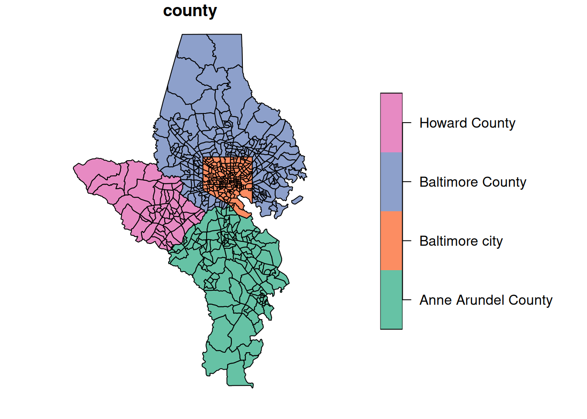
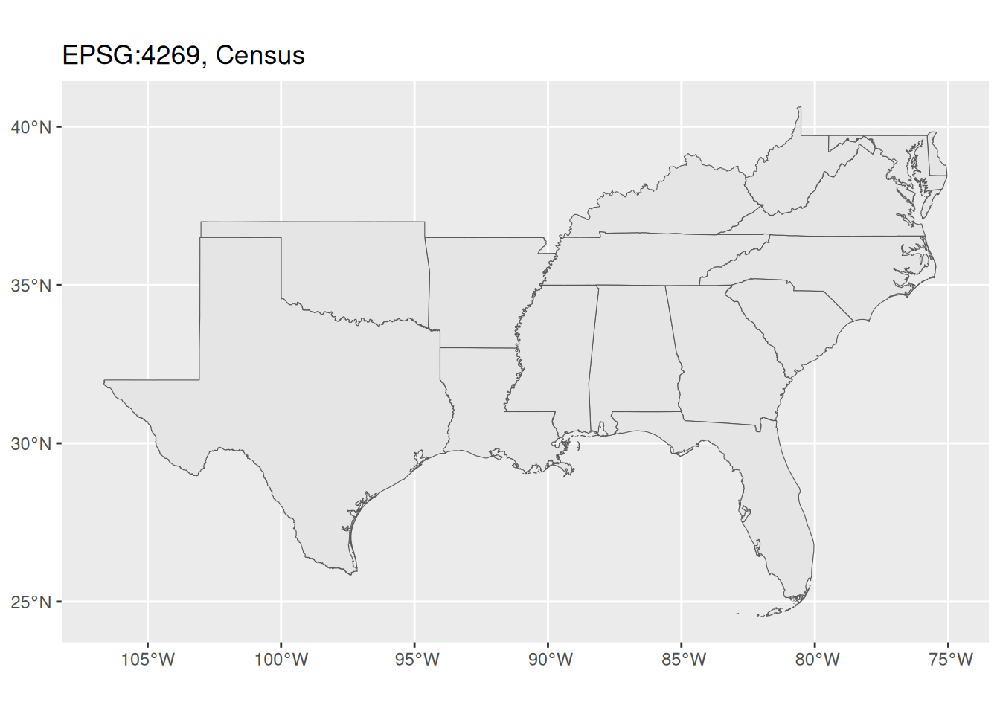
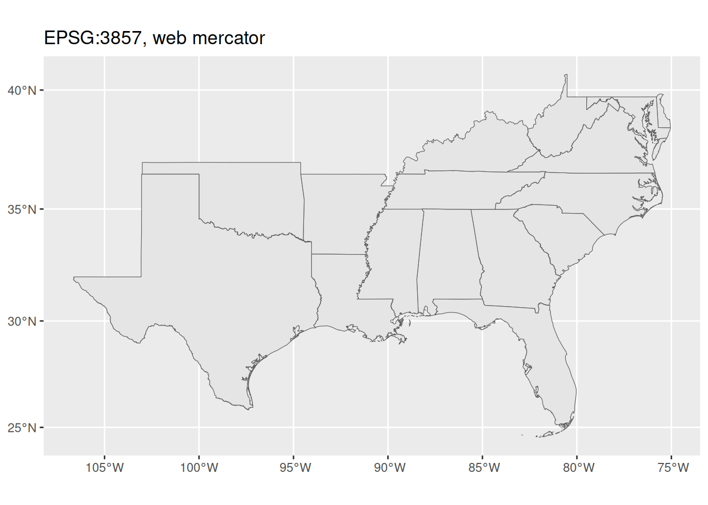
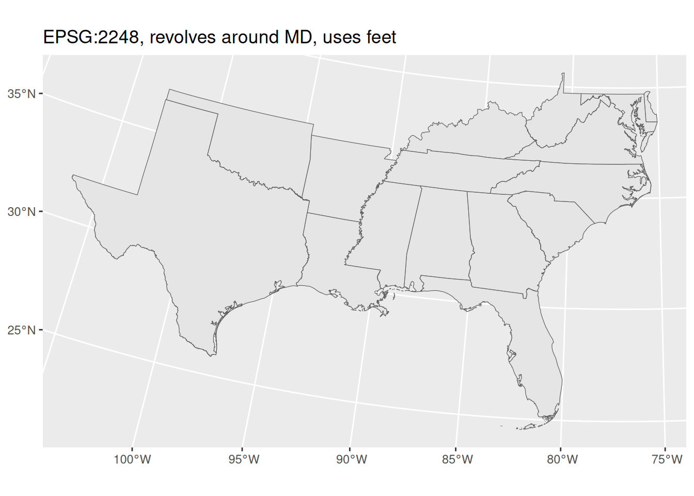
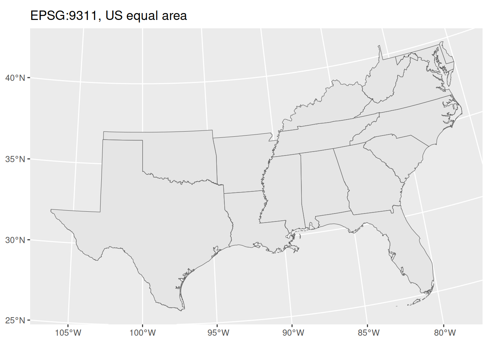
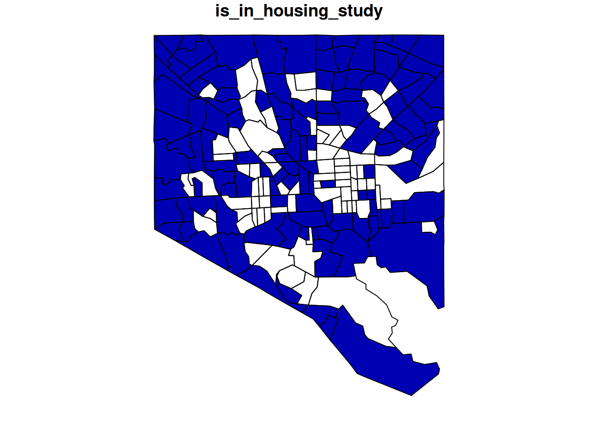

pkgs <- c(
"sf", # sf : spatial data :: dplyr : tabular data
"osmdata", # batch download data from OpenStreetMap
"terra", # sf-friendly raster tools
"tigris", # download shapefiles from the Census Bureau TIGER database
"rmapshaper", # command line tool to edit geographies
"tidyterra" # dplyr functions + ggplot geoms for terra rasters
)
install.packages(pkgs)
# or pak::pkg_install(pkgs)13. Spatial data in R
Once again we’ll play catch-up by running through some of the notes from GES 668, Building Spatial Datasets. Most of our spatial data will be in data types that come from the sf package, but we’ll also use terra for raster data a bit. Other resources:
- The
sfandterrapackage docs (both include cheatsheets) - The slides from Building Spatial Datasets, particularly week 2 (start on section 3)
- Lovelace et al. (2025), especially chapter 2 for an overview of packages and data types
- Stack Overflow’s r-sf tag
Types of spatial data
What type of spatial data you have will affect what you can do with it and how you go about mapping it. The main types are:
- Point data, where observations are characterized by their location. These points might also have attributes associated with them.
- Grid data, where measurements are taken at locations distributed throughout an area. These don’t need to be on a strict square grid; values might be interpolated between measured locations. Rasters are a common form of this where observations are more or less taken on a grid, often represented as one pixel per location (either observed or interpolated).
- Areal data, where values are associated with two-dimensional regions. These are often based on man-made boundaries such as countries, towns, etc.
We’ll be working with areal data the most. It has some drawbacks as far as visualizing data that we’ll talk about, but it is also flexible. For example, we have easy access to tract boundaries that cover all of Maryland. We have lots of data associated with each of those tracts. We can also join those tract geographies with other spatial data, including points within the tracts or overlaps between tracts and some other area. We can convert from that areal data to other data types, although we’ll lose some information (interpolating values associated with census tracts to a square grid, representing tracts as their centroids instead). Or we can aggregate point or grid data to areal boundaries (count of points within each polygon, pixels apportioned to polygons).
Spatial data in R
The spatial ecosystem
A few packages to install first (cross your fingers because the dependencies can be tough):
Much of the R spatial ecosystem has migrated from an older set of packages (sp, rgeos, rgdal) to a newer one (sf, plus its friends like stars and terra) designed to fit into the tidyverse packages.1 sf is also nice because many of the functions are based on PostGIS, so if you’ve worked with spatial databases (or might in the future) it’s easy to translate code.
1 This was actually a major concerted effort over the past few years because the original maintainer of many of those packages was retiring.
There are a few sf-based datasets in the justviz package, and many others are easy to get (tigris is very easy to use for Census Bureau data, and we’ll use osmdata to get OpenStreetMap shapefiles and data).
sf objects can be data frames with a geometry column, so you can work with them in many of the same ways as regular data frames; you might also see just plain geometry objects without any data attached.
Plotting
Vector geometries (e.g. points & polygons)
sf is the main package we’ll use for handling vector geometries, such as points, lines, polygons, etc.sf objects have a plot method, so you can just call plot(very_cool_sf_data) and get a basic plot:
| county | geoid | geometry |
|---|---|---|
| Howard County | 24027605601 | POLYGON ((-76.90501 39.2135… |
| Howard County | 24027602305 | POLYGON ((-76.85329 39.2790… |
| Baltimore city | 24510151200 | POLYGON ((-76.65636 39.3365… |
| Baltimore city | 24510270702 | POLYGON ((-76.57356 39.3685… |
| Baltimore city | 24510120201 | POLYGON ((-76.60948 39.3309… |
| Baltimore city | 24510200701 | POLYGON ((-76.68942 39.2935… |

A note about object-oriented programming (OOP): When you have a function that’s a method of some type of object, just as plot, you can look at help pages for that function by specifying the object type. So ?plot.sf will show you the docs for plot as it applies specifically to sf objects.
ggplot also has geoms for spatial data. For these notes, we’ll mostly just use sf’s plot method to focus on spatial data types, not mapping.
Raster geometries
Rasters are made up of grids with some set of attributes at each grid square. For example, if you’re studying tree canopy, you might have a grid of the state divided into 30m x 30m cells or pixels. For each cell, you might have a categorical attribute like main land cover type (is this cell mostly covered by grass, trees, water, impervious surfaces, etc). Or you might have just true/false data for whether the cells is mostly tree canopy. Or you might have a continuous numeric measurement, like the percentage of the cell that is covered by trees. The bottom line is you have a set resolution for the data, and you have some attribute(s) for each of those cells. There’s a dataset in justviz of landcover raster data; because of its size, you need a separate function to load it into your session. (I fixed a bug in how the dataset is read, so you need package version 0.3.1.)
There are two major packages that handle raster data and are made to be compatible with sf: stars, made by the same developers as sf (the r-spatial crew), and terra, made to more directly carry on older packages from the sp world (the rspatial crew).
We’re not doing a ton with raster data, and while stars has syntax more similar to sf, it also has bigger aims than we need (storing time series spatial data as cubes). So we’ll use terra with the tidyterra package unless someone has a pressing need to do otherwise.
class : SpatRaster
size : 4214, 3273, 1 (nrow, ncol, nlyr)
resolution : 30, 30 (x, y)
extent : 1587750, 1685940, 1902390, 2028810 (xmin, xmax, ymin, ymax)
coord. ref. : NAD83 / Conus Albers (EPSG:5070)
source : landcover.tif
color table : 1
categories : Class, Color, Description
name : Class
min value : Open Water
max value : Emergent Herbaceous WetlandsFrom the object’s printout you can see it’s got a resolution of 30m x 30m with 1 layer. We can plot it with terra’s plot method using a color table that’s stored in the raster data.
This dataset is cropped to the same extent as the tracts shapefile. If you need to work with the same data for a different area, see the code that preps the data in the justviz package
Use terra::mask to filter a SpatRaster object. You can also use tidyterra::filter to get dplyr-like syntax, but it seems to drop the landcover color table.
Projections
Just like in desktop GIS software, in R you can reproject spatial data to different coordinate reference systems (CRS). This is easiest if your data already has a CRS attached to it (all the datasets in justviz do, as do any you download from the Census Bureau with the tigris package, and many others). In some cases, mostly if you’re creating a bit of spatial data manually, you’ll need to first assign a CRS explicitly, then transform.
Some CRS codes you’ll see often:
- EPSG:4269, default for data downloaded from the Census Bureau
- EPSG:3857, aka Web Mercator
- EPSG:4326, used most often in GPS
- EPSG:2248, projected for good views of Maryland with units in feet
That last one is useful for us making maps locally because 1) it makes Maryland look pretty, and 2) having units in feet makes it easier to do transformations or calculations based on distances.
Locally, you probably won’t see much difference between these CRSes, but you would for a map of a large portion of the country.




Things to do with spatial data
Because sf is designed to be compatible with the tidyverse packages, you can do many of the same things to sf data frames as you can to regular ones. When you plot sf data frames or other objects with ggplot, you can also layer the spatial geoms like you would other geoms.
Aggregating spatial data
The most basic way to aggregate spatial data is to just take your geometries and squish them all together. You might do this to save space & memory if you have a very large set of points and only need locations, not any individual points’ attributes. You also might do it to make smaller geometries into bigger ones. This is helpful in mapping hierarchical shapes, because sometimes shapes will be slightly different from one object to the next and you end up with tracts that are supposed to fit inside towns but have tiny gaps in some places that make your map look janky and unprofessional. When possible, I prefer starting with my smallest geography and aggregating up to larger ones.
In order to save space, I put a shapefile in justviz of tracts but not counties, because you can aggregate up to counties. sf lets you do this in the same way as you would with other dplyr-based summarization. You can use a function inside dplyr::summarise like you normally would (e.g. mean, median, etc), or you can leave the summarization empty to just get the combined geometries.
Joining spatial & nonspatial data
You can join spatial data frames and nonspatial data frames the same way you would join two regular (nonspatial) data frames. I generally keep the spatial data frame on the left for two reasons:
- The data type follows from the table on the left side of the join. That means if you join an sf data frame on the left and a regular one on the right, you’ll get back an
sfdata frame; if you join a regular data frame on the left and ansfone on the right, you’ll get a regular data frame that happens to have a geometry column. - If I’m making a map, I most likely want every relevant geometry (e.g. every tract in the city) even if I have some areas that don’t have data. You can ensure that you’ll have all the shapes even if they don’t have data if you put your spatial data on the left side of the join, and use a left join rather than an inner join.
However, if you do an operation that returns a nonspatial data frame that has a valid geometry column, you can get it back into an sf data type with sf::st_as_sf, which coerces sf-related data types. Here are some examples related to joining tracts in Baltimore city with incomplete tract-level data. Let’s say we’re mapping an analysis related to housing in the city, but we only want to study tracts with at least 1000 households.
balt_sf <- justviz::tracts_sf |> dplyr::filter(county == "Baltimore city")
balt_housing <- justviz::acs |>
dplyr::mutate(is_in_housing_study = total_hh >= 1000) |>
dplyr::filter(county == "Baltimore city", is_in_housing_study) |>
dplyr::select(county, name, total_hh, is_in_housing_study)
paste0("class of balt_sf: ", toString(class(balt_sf)))[1] "class of balt_sf: sf, data.frame"[1] "class of balt_housing: tbl_df, tbl, data.frame"| county | geoid | total_hh | is_in_housing_study | geometry |
|---|---|---|---|---|
| Baltimore city | 24510151200 | 1606 | TRUE | POLYGON ((-76.65636 39.3365… |
| Baltimore city | 24510270702 | 1051 | TRUE | POLYGON ((-76.57356 39.3685… |
| Baltimore city | 24510120201 | NA | NA | POLYGON ((-76.60948 39.3309… |
| Baltimore city | 24510200701 | 1931 | TRUE | POLYGON ((-76.68942 39.2935… |
| Baltimore city | 24510090600 | NA | NA | POLYGON ((-76.59515 39.3283… |
| Baltimore city | 24510160801 | 1297 | TRUE | POLYGON ((-76.68121 39.2938… |
| county | name | total_hh | is_in_housing_study | geometry |
|---|---|---|---|---|
| Baltimore city | 24510010100 | 1433 | TRUE | POLYGON ((-76.57704 39.2832… |
| Baltimore city | 24510010200 | 1372 | TRUE | POLYGON ((-76.57617 39.2922… |
| Baltimore city | 24510010400 | 1535 | TRUE | POLYGON ((-76.58706 39.2858… |
| Baltimore city | 24510020300 | 2640 | TRUE | POLYGON ((-76.59923 39.2853… |
| Baltimore city | 24510030200 | 1547 | TRUE | POLYGON ((-76.60643 39.2907… |
| Baltimore city | 24510040100 | 5034 | TRUE | POLYGON ((-76.62264 39.2948… |

Transforming spatial data
There are lots of ways to transform spatial data, and the sf docs and books go into a lot of detail on them. Some that we’ll use for making maps in this class are:
- simplification, removing vertices from lines or boundaries
- buffers, expanding or contracting a geometry by a set amount
- centroids, center of mass of a polygon
- intersections, geometries created as the combination of shapes in both of a set of geometries
Spatial predicates and joins
Predicates are functions that return true/false. Think of them as asking, for each pair of geometries, questions like is point A inside polygon B, or is polygon C contained entirely within polygon D, or does shape E intersect with shape F in any way? Because these can be used for spatial joins, there’s a convenient list of them at ?sf::st_join. I most often use sf::st_intersects, which is the default for spatial joins and just determines whether 2 shapes of whatever dimensions touch in some way. A point and line can intersect, a line and polygon can intersect, 2 polygons can intersect, etc.
Once you know how you want to join two sets of geometries, a spatial join will combine them based on your predicate function. These follow some of the same mechanisms as other table joins, such as whether it is a left join or inner join.
I most commonly use spatial joins to locate points inside polygons, such as assigning each of Baltimore’s public artworks to a census tract:
| id | county | artist_last_name | artist_first_name | title | date | medium | location | site | visibility | access | geometry |
|---|---|---|---|---|---|---|---|---|---|---|---|
| 1 | Baltimore city | Streett | Tylden | Sails | 1978 | copper | Patterson HS | Second story window | NA | NA | POINT (-76.5919 39.28823) |
| 2 | Baltimore city | Russum | Olin | Unknown | 1969 | ceramic tree | Callaway ES | Stairwell | NA | NA | POINT (-76.68362 39.34557) |
| 3 | Baltimore city | Benson | J. Arthur | Unknown | 1973 | concrete and corten steel | Westport ES | Playground | NA | NA | POINT (-76.63833 39.26211) |
| 5 | Baltimore city | McCullough | Donna | NA | 1989 | mural | 141 S. Central Ave. | NA | NA | NA | POINT (-76.59947 39.28932) |
| 6 | Baltimore city | Alexander | Patricia | Unknown | NA | ceramic tiles | Lexington Market Station | Covers ceiling beams | NA | NA | POINT (-76.62102 39.29191) |
| 7 | Baltimore city | Farber | Saul | Unknown | 1980 | stained glass | Broadway Market | Window | NA | NA | POINT (-76.5919 39.28823) |
id county artist_last_name artist_first_name
Min. : 1.0 Length :672 Length :672 Length :672
1st Qu.:175.8 N.unique : 3 N.unique :353 N.unique :287
Median :346.5 N.blank : 0 N.blank : 0 N.blank : 0
Mean :346.8 Min.nchar: 14 Min.nchar: 3 Min.nchar: 1
3rd Qu.:517.5 Max.nchar: 19 Max.nchar: 50 Max.nchar: 25
Max. :690.0 NAs : 6 NAs : 55
title date medium location
Length :672 Length :672 Length :672 Length :672
N.unique :346 N.unique :130 N.unique :159 N.unique :457
N.blank : 0 N.blank : 0 N.blank : 0 N.blank : 0
Min.nchar: 2 Min.nchar: 4 Min.nchar: 4 Min.nchar: 4
Max.nchar: 50 Max.nchar: 23 Max.nchar: 37 Max.nchar: 75
NAs :120 NAs :122 NAs :115 NAs : 4
site visibility access geometry
Length :672 Length :672 Length :672 POINT :672
N.unique :335 N.unique : 38 N.unique : 4 epsg:4269 : 0
N.blank : 0 N.blank : 0 N.blank : 0 +proj=long...: 0
Min.nchar: 4 Min.nchar: 4 Min.nchar: 4
Max.nchar:162 Max.nchar:101 Max.nchar: 18
NAs :148 NAs :489 NAs :626 | id | county.x | artist_last_name | artist_first_name | title | date | medium | location | site | visibility | access | county.y | geoid | geometry |
|---|---|---|---|---|---|---|---|---|---|---|---|---|---|
| 1 | Baltimore city | Streett | Tylden | Sails | 1978 | copper | Patterson HS | Second story window | NA | NA | Baltimore city | 24510020200 | POINT (-76.5919 39.28823) |
| 2 | Baltimore city | Russum | Olin | Unknown | 1969 | ceramic tree | Callaway ES | Stairwell | NA | NA | Baltimore city | 24510271801 | POINT (-76.68362 39.34557) |
| 3 | Baltimore city | Benson | J. Arthur | Unknown | 1973 | concrete and corten steel | Westport ES | Playground | NA | NA | Baltimore city | 24510250301 | POINT (-76.63833 39.26211) |
| 5 | Baltimore city | McCullough | Donna | NA | 1989 | mural | 141 S. Central Ave. | NA | NA | NA | Baltimore city | 24510030100 | POINT (-76.59947 39.28932) |
| 6 | Baltimore city | Alexander | Patricia | Unknown | NA | ceramic tiles | Lexington Market Station | Covers ceiling beams | NA | NA | Baltimore city | 24510040100 | POINT (-76.62102 39.29191) |
| 7 | Baltimore city | Farber | Saul | Unknown | 1980 | stained glass | Broadway Market | Window | NA | NA | Baltimore city | 24510020200 | POINT (-76.5919 39.28823) |
Note that there are 672 points in the art dataset, and now 672 points in the joined dataset. Like with joins between an sf data frame and a regular one, the geometry type follows the data frame on the left2. I think about it as the left data frame being the one I’m most interested in holding on to, and the right is the one that’s providing additional attributes. In this case, I’m studying artworks and want to add tract to the set of information I have on each.
2 I imagine it’s possible for there to be edge cases where this isn’t true, but AFAIK it’s generally true.
If instead I were interested in tracts, and wanted to know what types of artwork or how many pieces were in each tract, I could switch the order around:
| county.x | geoid | id | county.y | artist_last_name | artist_first_name | title | date | medium | location | site | visibility | access | geometry |
|---|---|---|---|---|---|---|---|---|---|---|---|---|---|
| Howard County | 24027605601 | NA | NA | NA | NA | NA | NA | NA | NA | NA | NA | NA | POLYGON ((-76.90501 39.2135… |
| Howard County | 24027602305 | NA | NA | NA | NA | NA | NA | NA | NA | NA | NA | NA | POLYGON ((-76.85329 39.2790… |
| Baltimore city | 24510151200 | 577 | Baltimore city | Maynard | Valarie | Unknown | 1977 | quarry tile floor | Lower Park Heights Multi-purpose Center | Interior | NA | NA | POLYGON ((-76.65636 39.3365… |
| Baltimore city | 24510270702 | 410 | Baltimore city | Carlberg | Norman | Unknown | 1971 | polyester resin | Northern Parkway Jr. HS | Entrance plaza, lobby | NA | NA | POLYGON ((-76.57356 39.3685… |
| Baltimore city | 24510120201 | 503 | Baltimore city | Hoffmaster | Thomas | Unknown | 1970 | welded metal sculpture | Waverly Branch Library | Interior | NA | NA | POLYGON ((-76.60948 39.3309… |
| Baltimore city | 24510200701 | 401 | Baltimore city | Wilson | Glen | Unknown | NA | acrylic paint | Mary Rodman Recreation Center | Walls flanking entrance | NA | NA | POLYGON ((-76.68942 39.2935… |
Here’s one use of this: the art dataset comes from Baltimore’s open data portal, but for whatever reason a few points are outside the city. Say we wanted to limit this to just pieces that are strictly inside the city (and pretend the data didn’t have a county column). You can filter tracts for just the city, then do an inner join to attach that to the art locations.
| id | county.x | artist_last_name | artist_first_name | title | date | medium | location | site | visibility | access | county.y | geoid | geometry |
|---|---|---|---|---|---|---|---|---|---|---|---|---|---|
| 1 | Baltimore city | Streett | Tylden | Sails | 1978 | copper | Patterson HS | Second story window | NA | NA | Baltimore city | 24510020200 | POINT (-76.5919 39.28823) |
| 2 | Baltimore city | Russum | Olin | Unknown | 1969 | ceramic tree | Callaway ES | Stairwell | NA | NA | Baltimore city | 24510271801 | POINT (-76.68362 39.34557) |
| 3 | Baltimore city | Benson | J. Arthur | Unknown | 1973 | concrete and corten steel | Westport ES | Playground | NA | NA | Baltimore city | 24510250301 | POINT (-76.63833 39.26211) |
| 5 | Baltimore city | McCullough | Donna | NA | 1989 | mural | 141 S. Central Ave. | NA | NA | NA | Baltimore city | 24510030100 | POINT (-76.59947 39.28932) |
| 6 | Baltimore city | Alexander | Patricia | Unknown | NA | ceramic tiles | Lexington Market Station | Covers ceiling beams | NA | NA | Baltimore city | 24510040100 | POINT (-76.62102 39.29191) |
| 7 | Baltimore city | Farber | Saul | Unknown | 1980 | stained glass | Broadway Market | Window | NA | NA | Baltimore city | 24510020200 | POINT (-76.5919 39.28823) |
Now this is cut down from the original 672 points to 661.
Note also that to do any sort of spatial operation between two objects, they need the same CRS. In this case, I built the datasets to have the same CRS from the start, but you’ll often need to decided on one and reproject the shapes.
Getting spatial data
One of the tough things about working with spatial data is the system dependencies such as drivers that can be hard to have all in alignment. One of the nicest things about sf is how easily it can read different spatial data types. Some common types are Esri shapefiles (.shp), GeoPackage (.gpkg), and GeoJSON (.json or .geojson)—the last one is especially common with data coming from APIs. Raster data usually comes in pixel-based formats like GeoTIFF (.tif) or netCDF (.cdf). You shouldn’t have any trouble opening valid files in these formats with either sf or terra.
There are also packages to help read data directly from ArcGIS services into sf data frames, such as arcgislayers, maintained in part by our friend Eli. This is how I got data from local open data portals into justviz.
The Census Bureau has downloads of official geographies through the TIGER program, some of which are updated routinely (tracts get redrawn after each decennial census, legislative districts get redrawn and gerrymandered, OMB changes metro area definitions. I’m still fixing definitions of things from when Connecticut abolished counties in 2022). These are online as shapefiles, but the easiest way to access them in R is the tigris package, which lets you pick geography types, subsets, and years to download, optionally stashing them in your computer’s cache, and reads them as sf data frames.
You might also encounter spatial databases, such as PostGIS, or databases like SQLite or duckdb with spatial extensions. sf’s functions are named to mirror PostGIS, so if and when you need to work with spatial databases, you’ll be fairly familiar with the operations.3
3 dplyrwas also designed to, at least in part, mirror SQL verbs.
Lovelace, R., Nowosad, J., & Muenchow, J. (2025). Geocomputation with R (2nd ed.). https://r.geocompx.org/
There’s a lot more detail in Lovelace et al. (2025) ch. 8 and 10.7.